Process-based mass transport simulation
Helena Mitasova, Anna Petrasova, Vaclav Petras
Moving the course
- 5103 Tu,Th 3pm - 4:15pm (conflict with geoforum)
- 5103 Tu,Th 8:45 - 10am
- 3214 Tu,Th 10:25 - 11:45 (GRASS needs to be installed)
- 2115 Tu 1:30 - 2:45, Th 10:25 - 11:45? (needs GRASS)
Other agenda
- HW grades posted, explain differences in flow acumulation at a given point
- testing in Hunt April 11
- Project titles on moodle wiki: correct if needed, add methods and links to a google site and/or github
Learning objectives
- modeling flow / transport with sources and sinks
- reduced complexity models
- numerical methods for PDE models
- implementation
- applications
Modeling diffusion, flow, transport
- natural systems: geosphere, biosphere, atmosphere
- socio-economic systems: people, materials, trade
- coupled natural and socio-economic systems
Transport by water
- sediment transport and erosion / deposition
- pollutant transport
- coastal evolution: waves, currents and storm surge
 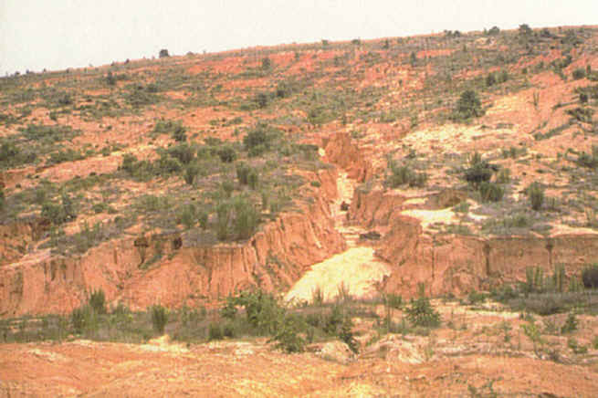
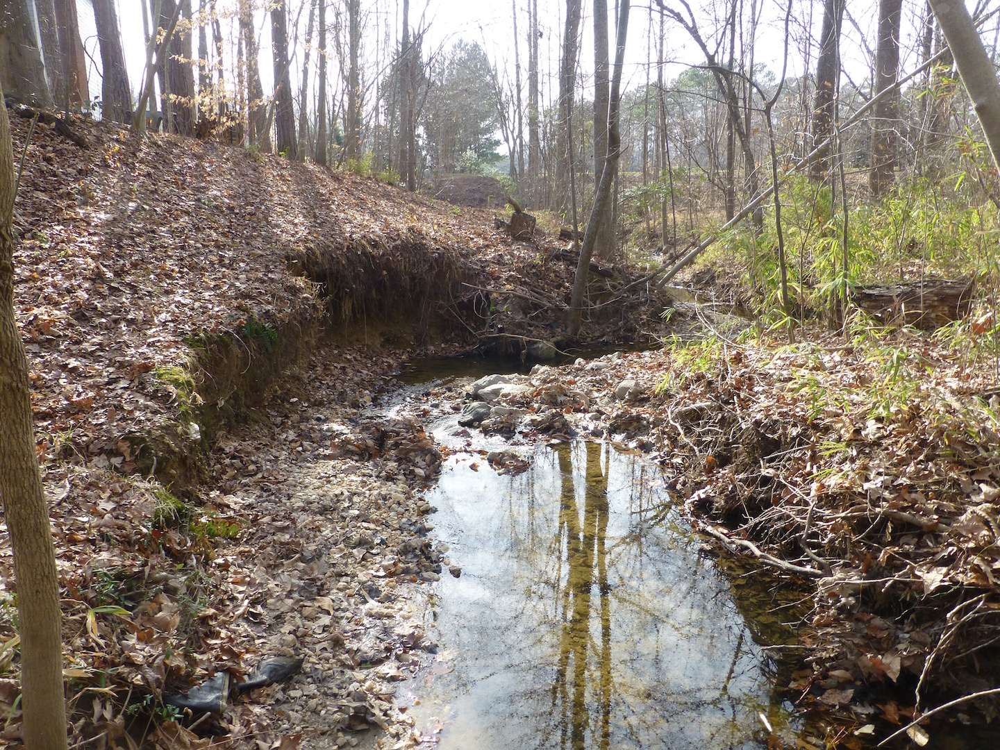
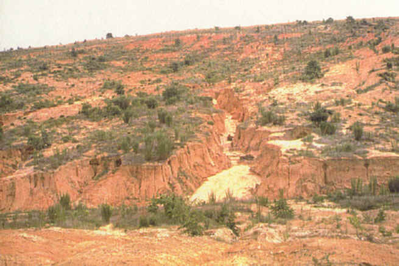
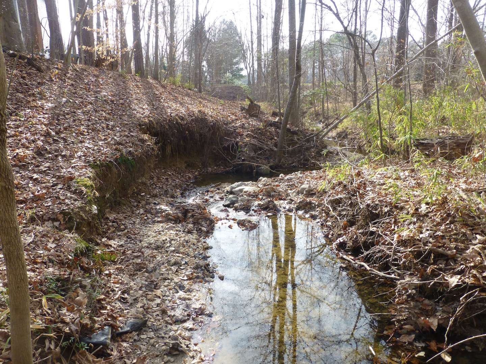
Transport by wind
- sand and dust, dune migration
- air pollutants, aerosols
- pathogens, pollen
Transport by gravitation
- landslides and debris flows
- avalanches
- glaciers
Motivation for simulations
- pollution prevention, control, and mitigation
- design of conservation measures
- hazards prevention, response, management
- sustainable land management
Diffusion, flow, and transport
- diffusion: change of density over time is proportional to change in gradient at a given location
- diffusion with source
- diffusion with drift: diffusion in medium moving by velocity ${\bf v}$
- diffusion with drift and source
- diffusion with drift, proliferation and decay
Discuss how these processes relate to computing and simulations in your projects
Modeling diffusion, flow, transport
- Recall diffusion equation:
change in density over time at location $x$ is proportional to change in gradient at this location
$$ {\partial n(x,t) \over \partial t} = D_0 {\partial^2 n(x,t) \over \partial x^2} $$
-
$n(x,t)$ is density, $x$ is location and $t$ is time, $D_0$ is diffusion constant
- Hillslope evolution with uplift: diffusion with source
change in elevation over time at $x$ is proportional to change in gradient at $x$ and uplift $U$
$$ {\partial z(x,t) \over \partial t} = U - \kappa \nabla q_s(x,t) = U - \kappa {\partial^2 z(x,t) \over \partial x^2} $$
-
$q_s(x,t) = \kappa \nabla z(x,t)$ is flux, $z(x,t)$ is elevation, $x$ is location and $t$ is time, $\kappa$ is a diffusion constant
What is second order derivative of elevation field?
Explore the model in landlab
Stochastic method of solution
Recall path sampling solution:
$$n({\bf r},t+\tau)=\int G_0({\bf r},{\bf r}',\tau)n({\bf r}',t) d{\bf r}'$$
which is evolution equation and the walk will propagate as
$${\bf r}^{(i)}(\tau)={\bf r}^{(i)}(0)+\vec\eta^{(i)}$$
where $\vec\eta^{(i)}$ is from distribution
$$ G_d({\bf r},{\bf r}',\tau) = {1 \over \sqrt{4\pi D_0 \tau}} e^{{-|{\bf r}-{\bf r}'|^2} \over {4D_0\tau)}}$$
Diffusion with drift and proliferation / decay
- Inclusion of a constant proliferation/decay term $U_0$:
$$
[\partial n({\bf r},t) /\partial t - \nabla_{\bf r}^2n({\bf r},t)
+\nabla\cdot(n({\bf r},t){\bf v}_0) +U_0 n({\bf r},t)]=0
$$
- Disregard for a moment the diffusion and drift terms so that the equation simplifies to
$$
{\partial n({\bf r},t)) \over \partial t} = -U_0n({\bf r},t)
$$
- This reminds us of a rate process, for which we have
$n({\bf r},t)\propto \exp(-U_0t)$. Enlightened by this insight we can write
$$
G({\bf r},{\bf r}',t)= e^{-U_0t}G_d(...)
$$
- How could this be captured by the sampling process ? We need to
introduce the walker {\it weight} which records how much of it has survived
or how much it has gained in time. The walker weight will evolve as
$$
w^{(i)}(t+\tau)=w^{(i)}(t)e^{-\tau U_0}
$$
- Note that this is multiplicative as it is in GF and assuming
positive $U_0$, the walks diminish exponentially quickly in time and
the solution will be given by
$$
n({\bf r},t)={\rm distr}
[\{
w^{(i)}(t)\delta({\bf r}-{\bf r}^{(i)}(t))
\}_{i=1}^{M_{walk}}]+\epsilon_{stat}
$$
Reduced complexity models
-
Solution of continuity and momentum equations for a steady state flow, constant velocity
and uniform steady rainfall leads to rational equation for estimation of peak discharge:
$$ Q = c.i.A $$
-
where $A$ is contributing area, $i$ is rainfall intensity, and $c$ is constant dependent on soil type, land cover
and average slope within the watershed.
- We can use uplsope contributing area to estimate water flow for reduced complexity erosion modeling
Reduced complexity models
Assuming steady state flow, sediment transport $q_s$ can be approximated by
sediment transport capacity $T_c$:
$$ q_s = K_T q^m (\nabla z)^n$$
$$ q_s \approx T_c = K_T A^m (\sin \gamma)^n$$
- where $A$ is contributing area as measure of water flow
- $K_T$ is transport capacity coefficient
- $\gamma$ is slope angle
- $m,n$ are empirical coefficients
Evolution of water flow
Water flow $q$ accumulates during steady rainfall:

Evolution of sediment flow capacity
Evolution in sediment transport capacity $T_c$ during steady rainfall, as water flow accumulates
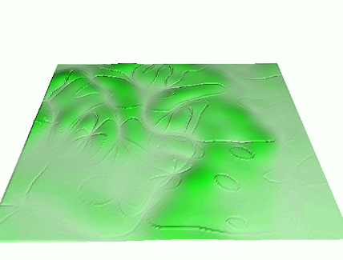
Erosion modeling: equations
- USLE,
$$E=R.K.L.S.C.P$$
-
empirical factors/coefficients
R - rainfall intensity
K - soil erodibility
L - hillslope length or contributing area
S - slope steepness
C - cover
P - protection measures
- USPED
- SIMWE/WEPP
Erosion modeling: equations
Erosion modeling: methods comparison
Erosion models with different level of reduced complexity:
- erosion only (detachment limited regime) hillslope length and contributing area
- erosion and deposition, transport capacity regime and variable sigma
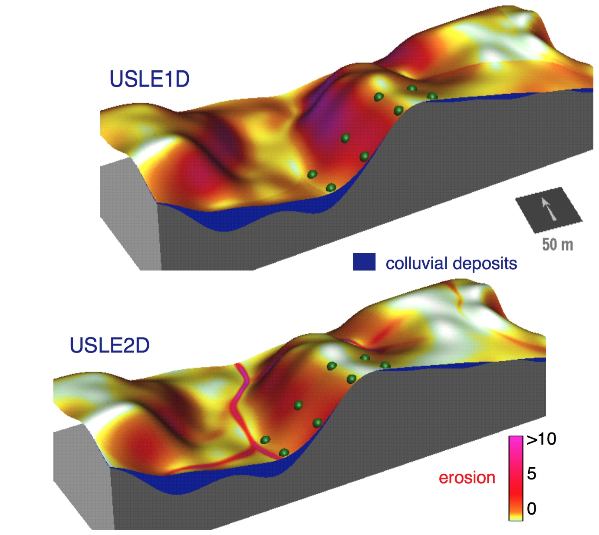
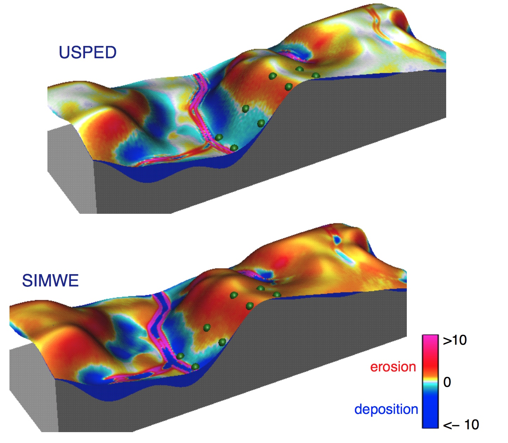
Path sampling method
Weighted particles: sediment transport with proliferation and decay
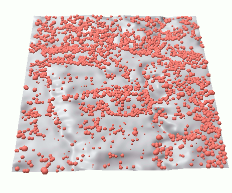
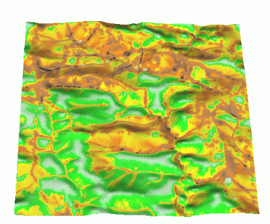
Path sampling method
Spatially variable source
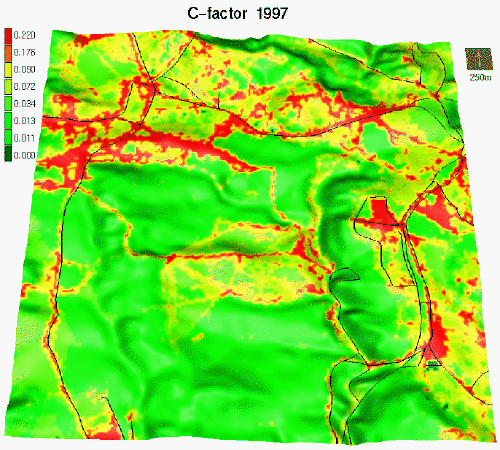
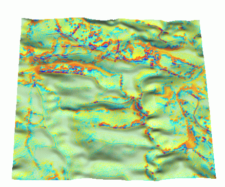
Path sampling method: accuracy
Error is proportional to $1/\sqrt N$, $N$ is number of particles

Detachment and transport capacity limited regime
Ratio of sediment transport capacity and detachment capacity controls
the spatial extent of deposition: impact of change in detachment capacity coefficient $K_c$,
transported sediment remains constant
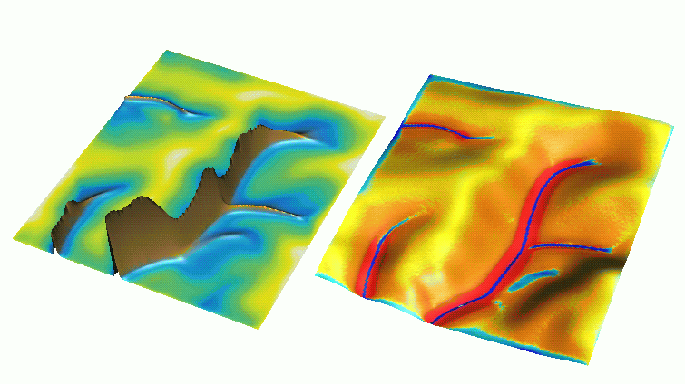
Detachment and transport capacity limited regime
Ratio of sediment transport capacity and detachment capacity controls
the spatial extent of deposition: impact of transport capacity coefficient $T_c$,
transported sediment is reduced
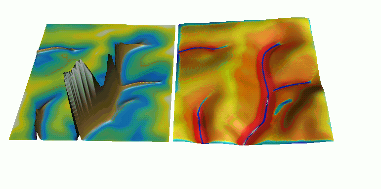
Applications
Sediment flow and net erosion/deposition for variable land use,
USPED model
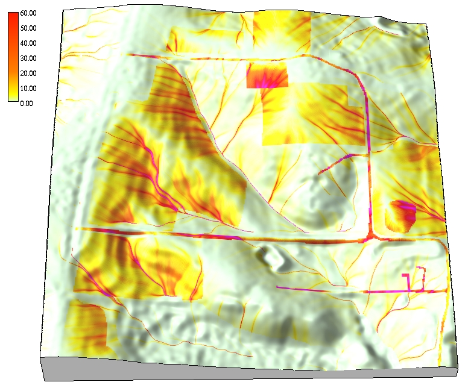
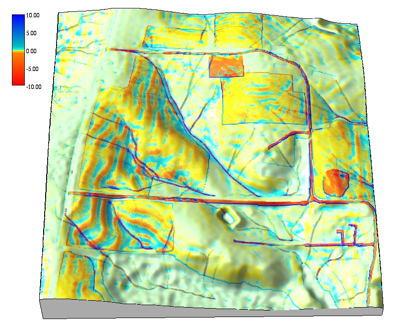
Applications
Simulated erosion and deposition pattern and observations
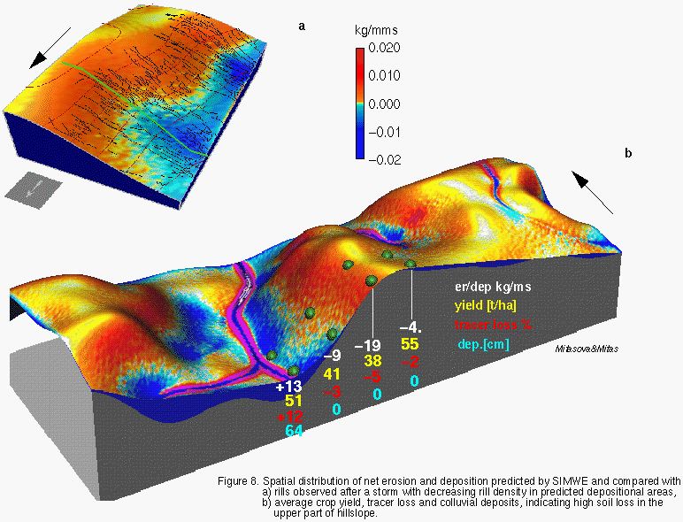
Applications
Land use management: soil erosion control
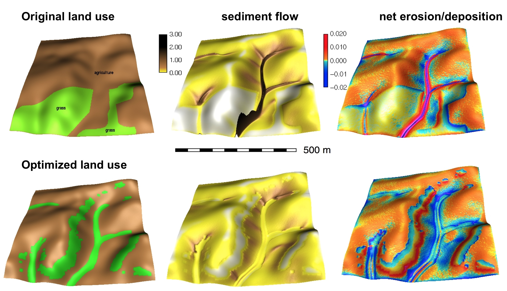
Coupled models
Climate, landscape evolution, and settlements:
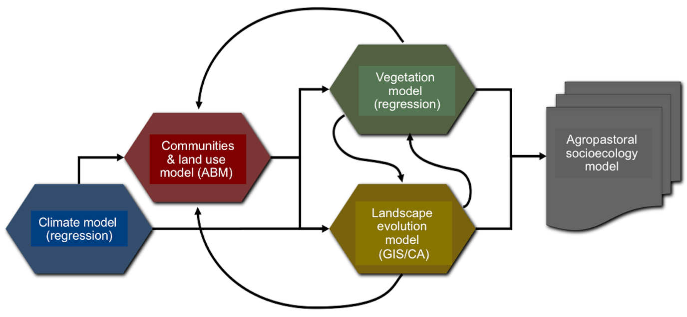
Applications
- natural and socio-economic processes
- generalize the concept - define appropriate gradient field and density
- how does your research relate to diffusion, dispersal, flux and related processes?
Example: growing cities - inverse of population density or economic opportunity fields